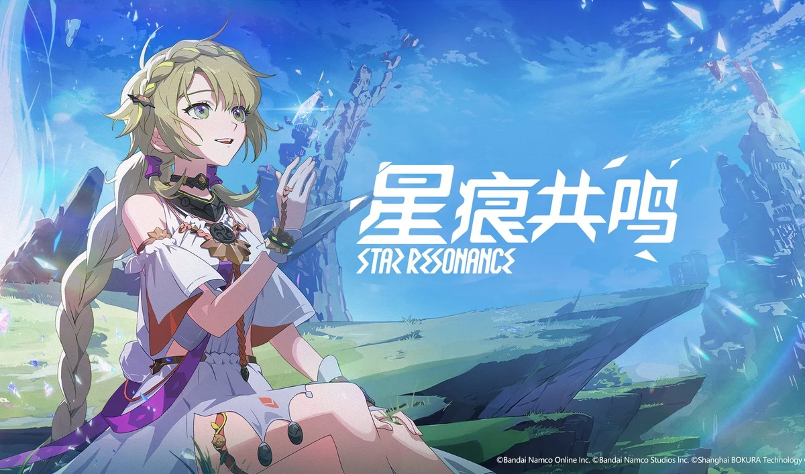

万代南梦宫《蓝色协议》停运后，由腾讯系上海宝可拉基于其 IP 推倒重制的多端二次元动作 MMO。你在星球雷格纳斯上捏一个失忆冒险者，用武器决定职业、随时切换流派，在动画电影级卡通渲染的开放大地图里探索古代遗迹、打世界 Boss、经营生活职业与家园。原版曾被寄望为「日本的原神」却因内容匮乏一年暴死；重制版主打「二次元 MMO + 日式动漫风」差异化，多端同服跨平台。
想象一颗叫雷格纳斯的星球：数千年前，被称为神族的存在用淡蓝色能量「记忆痕迹」造出了能干涉时间的辉煌文明，可他们最终离去，只留下遍布大地的古代遗迹。等人类接手这些遗产，一股名为「虚无侵蚀」的扭曲之力开始污染世界——古代神迹如今成了让生物发狂的灾祸源头。而这一切，被一位失忆的冒险者撞了个正着。
你就是那位失忆者——在贸易城阿斯特利兹醒来，捏好自己的模样，加入探索遗迹的中立组织「先驱局」。你用武器决定职业、随时切换流派，在动画电影级的大世界里探图、打世界 Boss、经营生活。可你越深入神族的遗迹，越发现自己的失忆和这个星球的秘密缠在一起——你到底是谁，为什么会降临在这场灾变的中心？
你第一次翻过山脊、看见远处古代遗迹在夕光里浮现的那个瞬间，你会明白为什么它当年被寄望成「日本的原神」。可这个 IP 的路走得很坎坷：万代原版曾创下二十万人同时在线的纪录，却因内容匮乏在上线一年后暴死；如今腾讯系团队把它推倒重制成多端 MMO「星痕共鸣」，重新出发。这不是一个关于拯救世界的故事，而是一个关于「在废墟上重新拼出自己」的故事——这一次，它能走多远？
日式动画电影质感 × 开放世界 MMO，是把「可由玩家操作的剧场版动画」做成在线大世界的招牌美学。底色是神族离去后的雷格纳斯大陆——中世纪城邦、古代遗迹与赛博科技混搭的明亮奇幻；变异在于用精心调校的 cel-shading 二分色阶渲染，把 3D 大世界做出最接近手绘动画的观感，被称「国内独一份的日式动漫风 MMO」。色彩锁定记忆痕迹的淡蓝 × 大世界暖阳的明亮组合，整体调性不走写实、只走鲜艳通透的动画感——这也是它当年被冠以「日本的原神」的视觉底气。
「动画级卡通渲染大世界」的视觉共识跨越了近三十年。1997 年《最终幻想》系列把日式奇幻 RPG 的召唤兽与飞空艇美术推向主流。2013 年《仙境传说》一脉的 anime MMO 验证了二次元在线世界的市场。2020 年《原神》证明二次元卡通渲染能撑起 3A 级开放世界，成为全行业对标标杆。2023 年万代《蓝色协议》以奥村大悟领衔的自有团队、UE4 精调 cel-shading，做出「最接近手绘动画」的 anime MMO，却因内容匮乏一年停运。2025 年腾讯系团队推倒重制成《星痕共鸣》，把这套动画级渲染接力到多端同服的二次元 MMO 上。
基于体验清单 · 审美偏好 · IP故事三维度综合选出
点击链接跳转到对应平台查看 · 仅整理外部链接